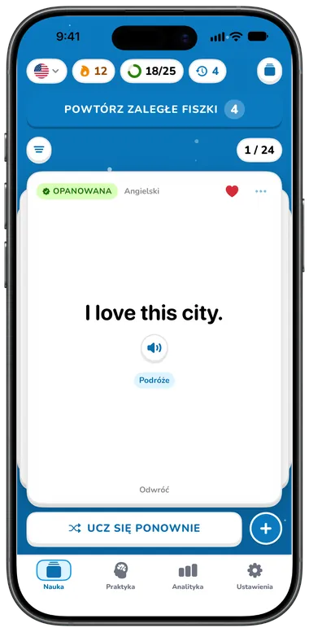
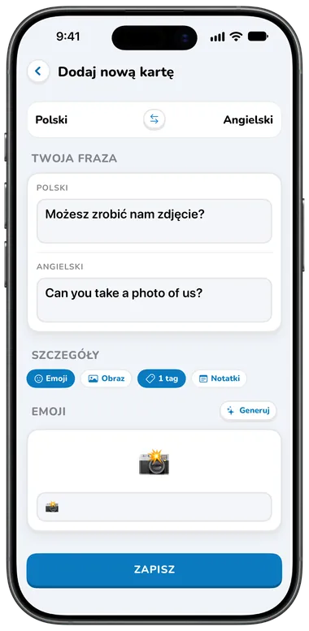
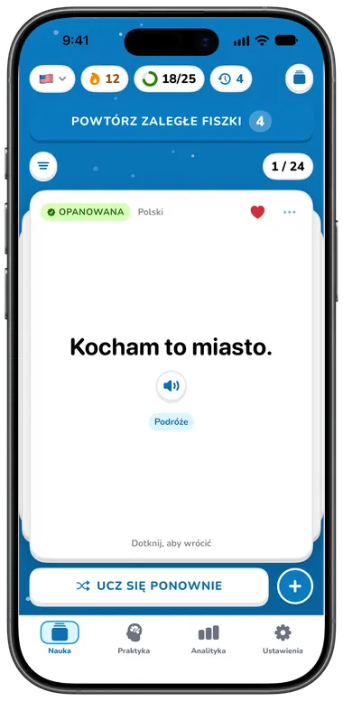
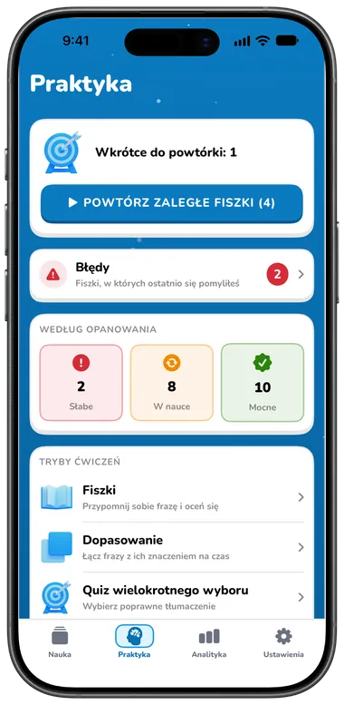
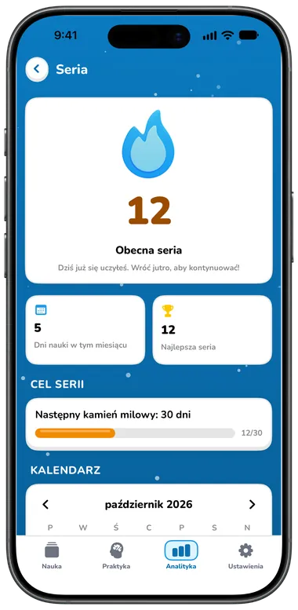
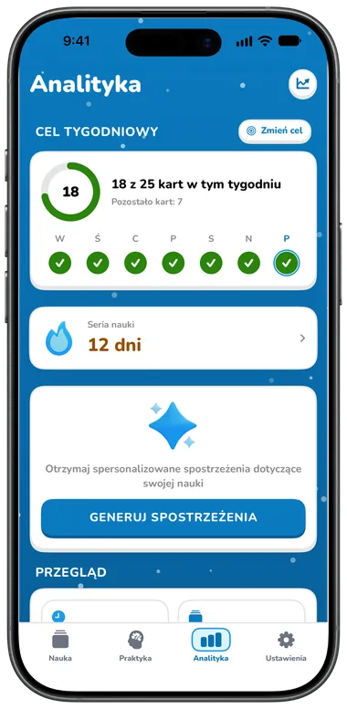
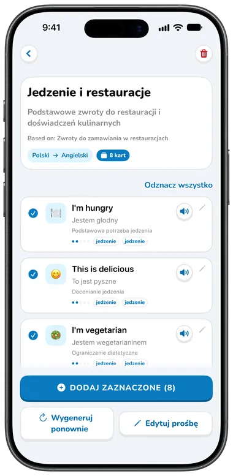
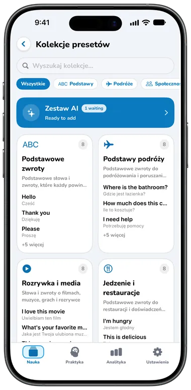

Funkcje
Wszystko, czego trzeba, by mówić
Fiszki, których możesz posłuchać, gry, dzięki którym powtórki są przyjemne, i ćwiczenia, w których mówisz słowa na głos. Za darmo na start, z Premium, gdy chcesz więcej.

Start w kilka sekund
Wybierz języki, poziom, cel i zainteresowania, a Flippin sam przygotuje Twoją pierwszą talię.
- Pakiet startowy z gotowymi kolekcjami zwrotów dopasowany do Twoich zainteresowań, więc talia nigdy nie jest pusta
- Wypróbuj trzy prawdziwe fiszki już podczas konfiguracji: odwróć, posłuchaj i oznacz „Jeszcze raz” albo „Umiem”
- Bez zakładania konta; logowanie przez Apple jest opcjonalne


Fiszki w mgnieniu oka
Wpisz słowo lub zwrot, a po chwili tłumaczenie uzupełni się samo. Możesz je poprawić; Twoje zmiany zostaną zachowane.
- Tłumaczenie Apple na urządzeniu, gdy język jest pobrany, w przeciwnym razie Google
- Jednym dotknięciem zamieniasz kierunek i piszesz w dowolnym z dwóch języków
- Notatki, do pięciu tagów i ulubione na każdej fiszce
- Obrazy z Pexels i emoji, wpisane samodzielnie lub podpowiedziane przez AI Premium


Usłysz każde słowo
Dotknij głośnika po dowolnej stronie fiszki, na dowolnej liście lub podczas ćwiczeń.
- Bezpłatne głosy Google (dziewięć angielskich akcentów) i głosy systemowe, które działają także offline
- Regulowana prędkość od 0,5× do 2×
- Prawie 1000 naturalnych głosów Speechify z filtrami, odsłuchem i rekomendacjami dla każdego języka Premium


Odwracaj, przesuwaj, ucz się
Twoja talia to stos papierowych fiszek 3D. Dotknij, by odwrócić, przesuń, by przejść do następnej, przetasuj, by uczyć się od nowa.
- Każda fiszka pokazuje, czy jest nowa, w nauce czy opanowana
- Filtruj według ulubionych, trudnych fiszek lub tagu
- Tryb nauki pokazuje najpierw nowy język, Tryb podróży najpierw Twój
- Tryb emoji pokazuje na odwrocie emoji zamiast tłumaczenia Premium

Siedem trybów ćwiczeń
Praktyka sama wybiera fiszki, które tego potrzebują: najpierw zaległe, potem błędy, a na końcu nowe. Możesz też ćwiczyć swoje błędy albo fiszki słabe, w nauce lub mocne.


| Tryb | Co robisz | Plan |
|---|---|---|
| Fiszki | Przypomnij sobie znaczenie, pokaż odpowiedź, a potem „Jeszcze raz” albo „Umiem” (lub przesuń) | Za darmo |
| Dopasowanie | Połącz sześć par w dwóch kolumnach na czas | Za darmo |
| Quiz wielokrotnego wyboru | Wybierz poprawne tłumaczenie z czterech kafelków | Premium |
| Uzupełnij lukę | Dokończ zdanie, którego znaczenie widać poniżej | Premium |
| Słuchanie | Posłuchaj zwrotu (odtwórz ponownie lub wolniej) i wybierz znaczenie | Premium |
| Pisanie | Wpisz zwrot; drobne pomyłki w znakach diakrytycznych lub interpunkcji liczą się jako prawie dobrze | Premium |
| Mówienie | Przytrzymaj, by nagrać, i powiedz zwrot; rozpoznawanie mowy go sprawdzi, a w razie potrzeby możesz go wpisać | Premium |
Każda sesja kończy się podsumowaniem: poprawne odpowiedzi, skuteczność, czas, co wkrótce trzeba powtórzyć i Twój cel tygodniowy. Fiszki, z którymi masz problem, wracają kilka kart później, a każda odpowiedź aktualizuje stopień opanowania fiszki i planuje jej następną powtórkę.
Serie i cele
Małe codzienne sukcesy widoczne na pierwszy rzut oka.
- Seria nauki z kalendarzem miesiąca, najlepszą serią i kolejnym kamieniem milowym (7, 30, 100, 365 dni)
- Cel tygodniowy: 10, 25, 50 lub 100 kart, z pierścieniem dla każdego dnia tygodnia
- Codzienne przypomnienie o nauce i przypomnienie o trudnych fiszkach o wybranych przez Ciebie porach


Zobacz swoje postępy
Za darmo: Twoja seria, cel tygodniowy, łączny czas nauki, dzisiejsze przerobione fiszki i sesje oraz skuteczność od początku.
- Wykresy czasu nauki według tygodnia, miesiąca lub roku Premium
- Rozkład opanowania, trendy skuteczności, kamienie milowe i odznaki Premium
- Trener nauki AI z codzienną wskazówką i rekomendacjami opartymi na Twoim tygodniu Premium


Rozmówki AI
Opisz, czego chcesz się nauczyć, wybierz 10, 15 lub 20 fiszek i otrzymaj gotową kolekcję dla swojej pary językowej i poziomu.
- Dotknij dowolnej fiszki, by ją edytować, wybierz, które dodać, wygeneruj ponownie lub edytuj prośbę
- Ostatnie 20 wyników zostaje zachowanych jako wersje robocze, także offline
- Użytkownicy wersji bezpłatnej mogą przejrzeć przykładowy zestaw przed przejściem na Premium
Premium Funkcje AI wymagają Premium i logowania przez Apple. Treści wygenerowane przez AI mogą zawierać błędy.


30 kolekcji zwrotów
168 przydatnych zwrotów w każdym języku w 11 tematach: podstawy, podróże, życie towarzyskie, styl życia, jedzenie, sytuacje awaryjne, zakupy, pogoda, technologia, praca i rozrywka.
- Przejrzyj każdą kolekcję i wybierz fiszki, które chcesz
- Jedna kolekcja na temat za darmo (łącznie 11) Za darmo
- Wszystkie 30 kolekcji Premium


I wiele drobiazgów

Synchronizacja iCloud
Fiszki, tagi i historia ćwiczeń synchronizują się między iPhone'em i iPadem przez Twój własny iCloud, z kontem lub bez.

Konto opcjonalne
Logowanie przez Apple synchronizuje Twój profil, serię i subskrypcję między urządzeniami. Po wylogowaniu fiszki zostają.
Jasny i ciemny
Jasne niebo w dzień i rozgwieżdżona noc w trybie ciemnym, zgodnie z ustawieniem systemu lub Twoim wyborem.
34 języki aplikacji
Aplikacja mówi też w Twoim języku, z układem od prawej do lewej dla arabskiego i hebrajskiego.
Za darmo i Premium
Plan bezpłatny obejmuje do 40 fiszek w jednej parze językowej. Premium znosi limity i dodaje wszystko, co powyżej oznaczono jako Premium.
Premium kosztuje $5.99/miesiąc, $39.99/rok (z 7-dniowym bezpłatnym okresem próbnym dla kwalifikujących się nowych subskrybentów planu rocznego) lub jednorazowo $99.99 za dostęp dożywotni. Ceny podano w USD i różnią się w zależności od kraju lub regionu; App Store pokazuje Twoją cenę przed zakupem. Zobacz Warunki korzystania.
Porównujesz aplikacje? Przeczytaj Flippin czy Anki.

Zacznij mówić już dziś
Pobierz Flippin za darmo, wybierz języki, a Twoje pierwsze zwroty od razu będą gotowe do ćwiczeń.
Na iPhone'a i iPada · iOS 18 lub nowszy